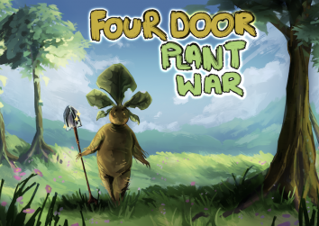

Game Developer
I am a BSc Game development graduate from Norwich University of the Arts with an interest in procedural generation and voxel based games. I am proficient in many programming languages with my main 3 being C++, Java and Python, I also know some webbased languages like html, css and javaScript making a few web based games using these. Some extra languages I have used, but are not at the same level as the others, are Lua and Perl. I am also good at maths and physics taking them at A-levels and finishing with B's so I have a decent understanding of mechanics and 3D maths. I'm a fast learner, my best example is learning Perl in 2 weeks during a work experience placement going from not even having heard of it to creating a DNA to RNA translator and sequencer using large files.
More personally about me, I am a massive nerd loving all forms of games having an ever growing cabinet of board games, DMing weekly D&D games and spending most of my time playing all sorts of video games. My favourite types of games are rogueLikes such as binding of isaac , risk of rain and more recently crab champions. My guilty pleasure however are job simulators like house flipper, powerwash sim and gas station sim.
I have participated in a few game jams during my time at University most of which I was the only developer. For the global game Jam 2023 I worked with my group to create an exploration based 3D tower defence game called 4 Door plant war where the player explores different worlds themed off of the seasons to find different plant seeds to grow in the main garden to defend against enemies that are trying to reach the main portal. A link to the executable, github and a gameplay video can be found on the games global game jam website.
Another game jam I particapated in was one for a cancer charity called The Big C, we were tasked with creating a game that can be used by younger children to learn more about the treatment for cancer and its affects. For this our group came up with the idea to create a tower defence Game called Cancer Crushers where the towers are different treatments that destroy the enemy cancer cells. The game was split up by small informative sections where a cartoon doctor explained what the treatments were and how they affected the body and explained what cancer is and does.
For year 2 at University I worked with a group to create a game off of the theme " a coversation to change the world". We eneded up making an insult simulator called KeyBash where the player can either insult or compliment the enemies to defeat them. The enemies will react differently depending on the actions the players takes. If the player compliments the enemies then they will be more likly to compliment the player back, healing them. However if the player decides to insult more often then the enemies will instead be more likly to insult back damaging the player. The game is split up between the over world where the player is trying to reach the top of the platforms to reach the boss, and the battle scene where the player is given a hand of words availiable to them to use against the enemy.The enemy responds to the player with their own selection of words that will either hurt or damage the player. The player cant spam words as they have an energy bar that if it goes over the top will cause the player to deal less damage with their words. Whilst making this game my main thoughts were to make sure that the player wasnt forced into saying specific things which is why the player has to type in what they want to say instead of picking preset sentences or phrases.
For my year 3 project I worked by myself to create a procedurally generated voxel based game called BlockWorld heavily inspired by minecraft and similar titles. To make this game I learnt about noise and more specifically Perlin noise and implimented my findings to create caves systems, hills, rivers and biomes. The world is in theory infinite and will be different based on what seed is given to randomize the permutation tables for the terrain, caves and other aspects. The player can interact with the world by breaking and placing blocks to create different structures. To oppose the player however, there are goblins that spawn in and will attack the player. They will chase the player and break blocks in order to reach them. Whilst making this game performance was a main focus of my time as spawning in around 50,000 blocks at once as the player explores the world can take some time if not well optimsed. I manged to get the time for a chunk to load down to around 4x faster than it was and with LOD added I managed to get it too a reasonable performance but it definetly could be better with some more time put into it.
Currently I am working on a project in my free time. I just started but I plan to do dev logs to show the process. The game is a goblin themed cooking game where the player is a goblin that has aquired a cafe through regular goblin means and has started to run it. The player can collect ingrediants foraging, hunting and fishing however these will create lower quality meals than if the player travels to the local towns and villages and loots their supplies and farms. I plan to have the towns be randomly generated each time and play a bit like far cry's outpost system. Other features I hope to add are minigames for cooking meals and a way to upgrade and decorate the resturant. Through this project I hope to learn how to create my own art assets and to get used to creating a finished product and hopfully put it on steam.